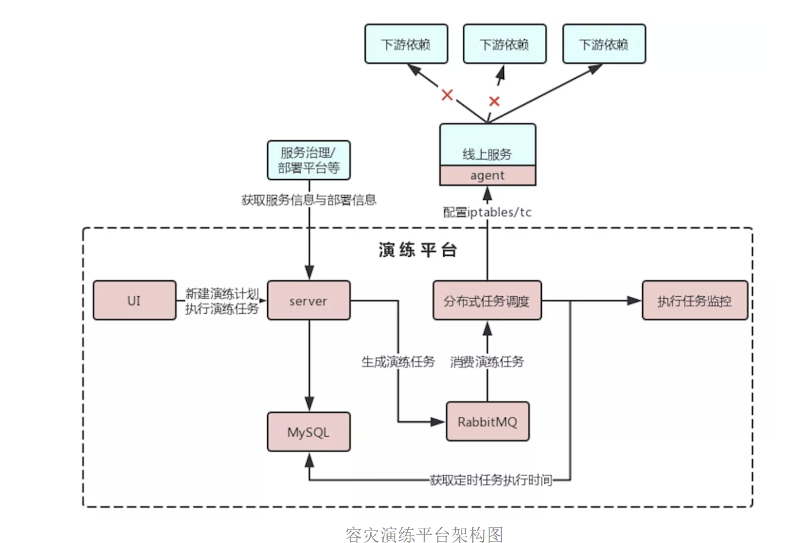
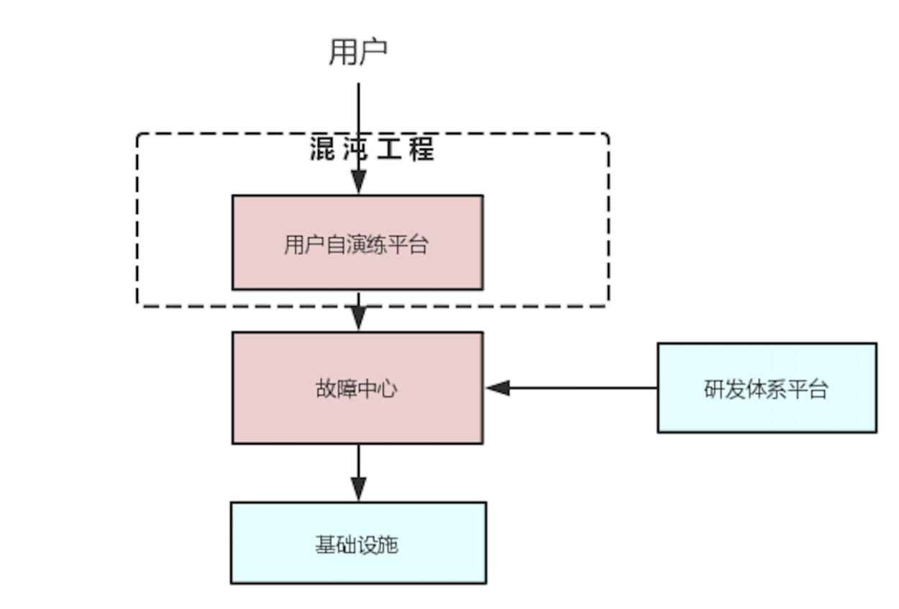
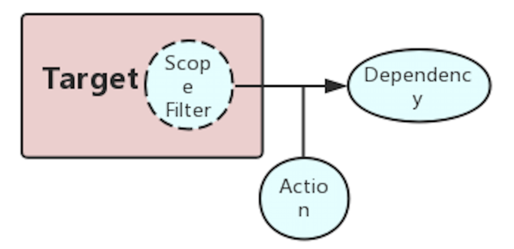
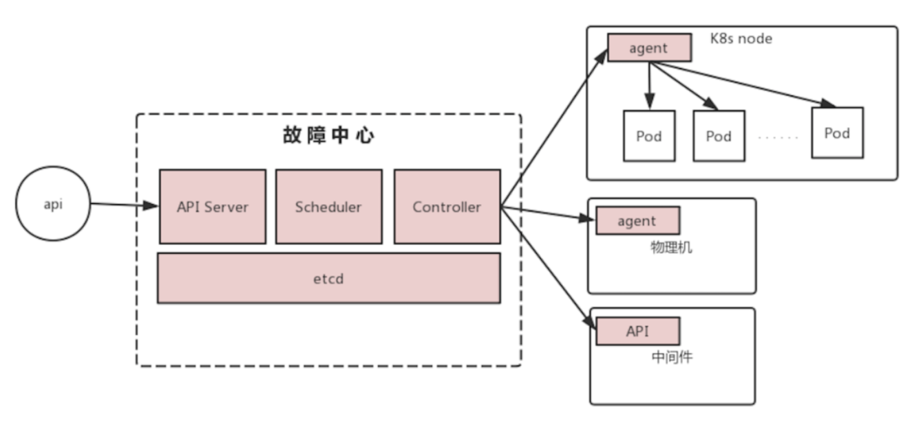
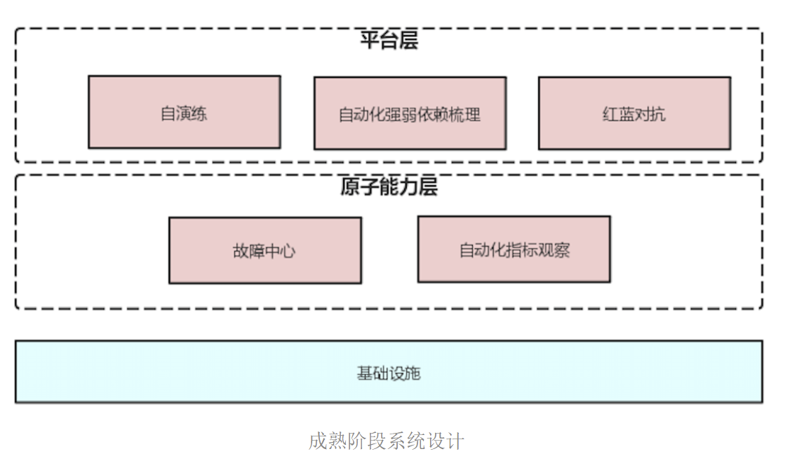
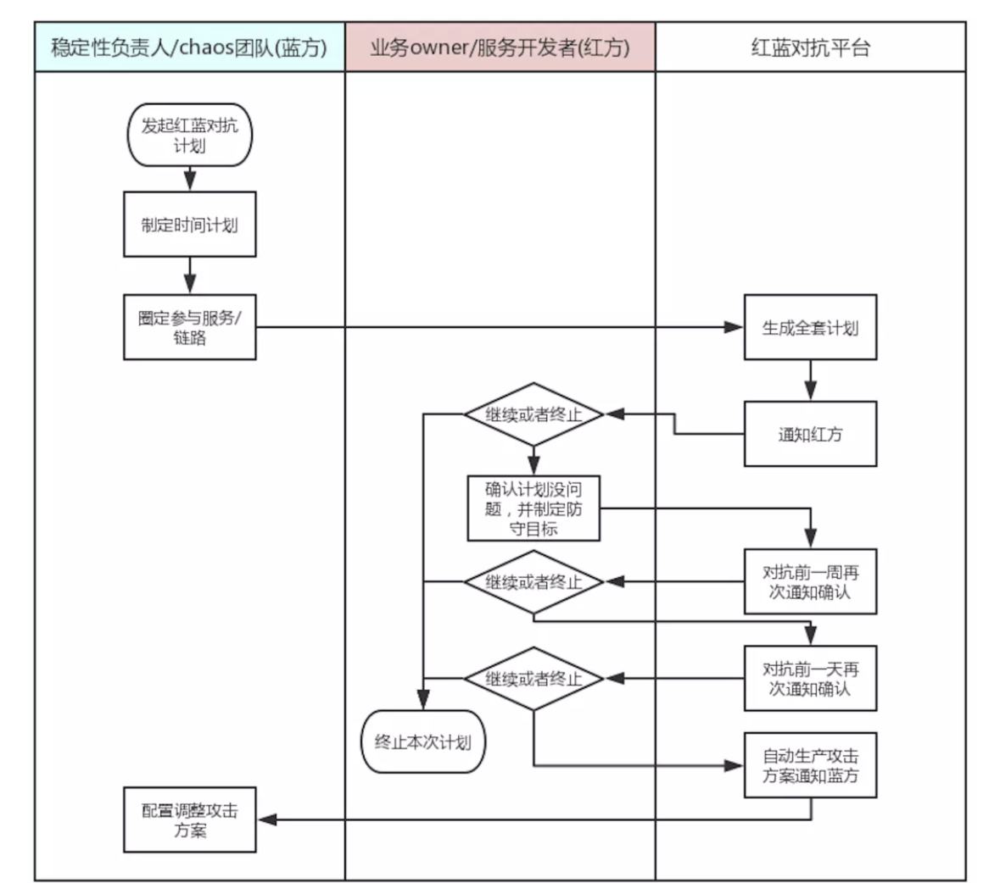
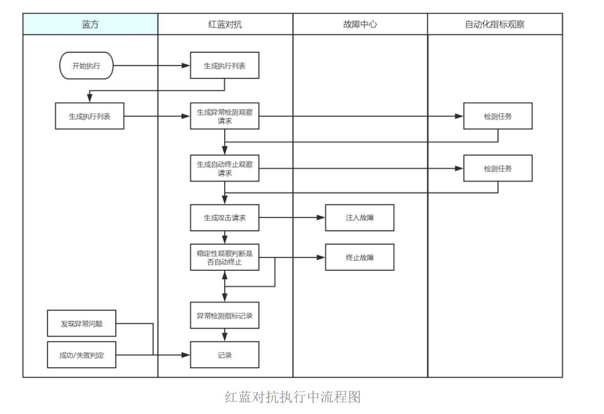
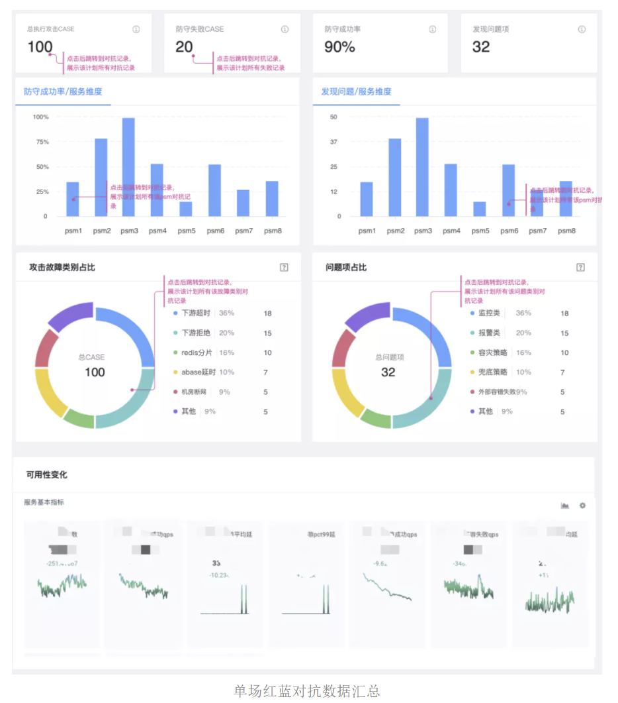
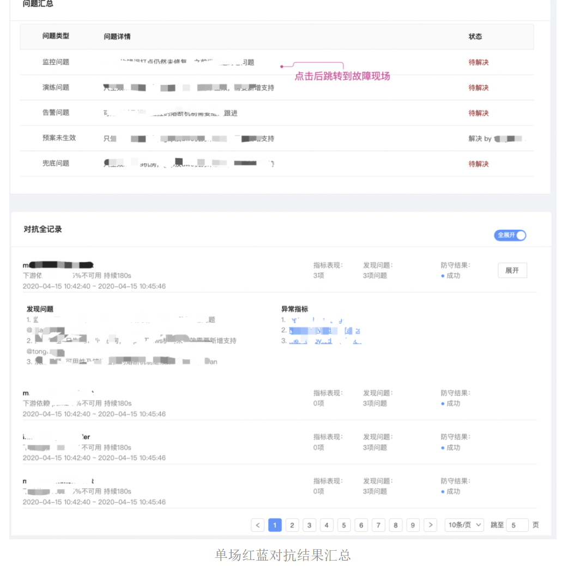
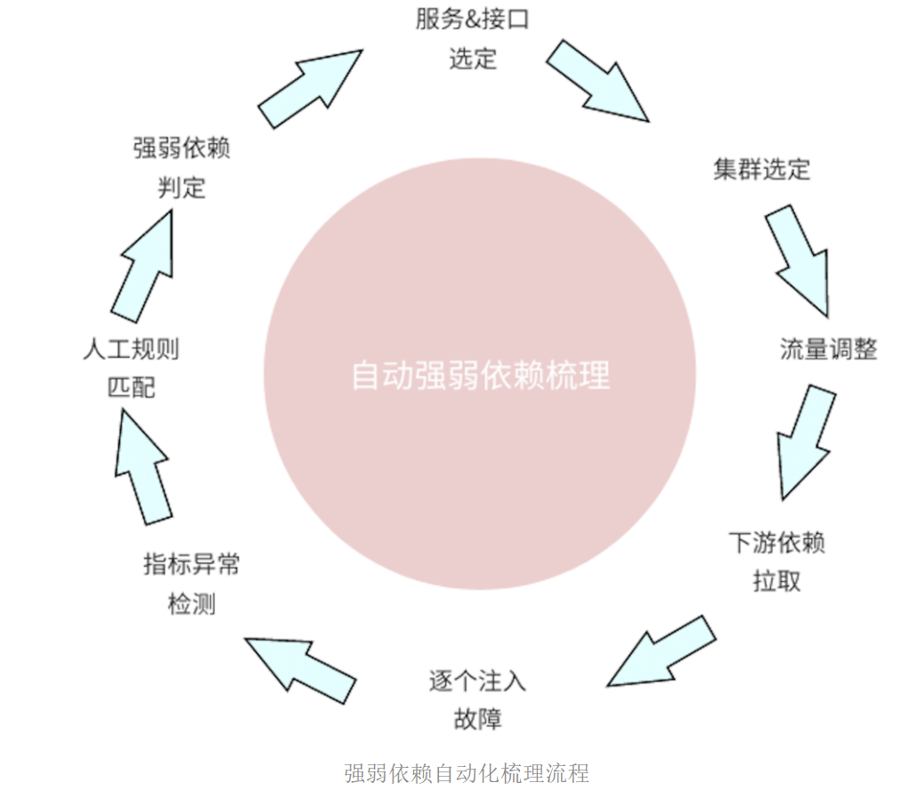

字节跳动混沌工程实践总结
原创 基础架构团队 字节跳动技术团队;) 2020-04-27
本文选自“字节跳动基础架构实践”系列文章。
“字节跳动基础架构实践”系列文章是由字节跳动基础架构部门各技术团队及专家倾力打造的技术干货内容，和大家分享团队在基础架构发展和演进过程中的实践经验与教训，与各位技术同学一起交流成长。
混沌工程是通过故障注入的方式帮助系统寻找薄弱点，从而提高系统的稳定性。随着微服务、云原生相关技术的发展，分布式系统已经流行在业界各处，但因此也带来了复杂度急剧上升、故障发生难以预测后果、难以避免与验证等挑战。而混沌工程正是通过故障注入等方式为切入点，帮助解决以上问题。本文讨论了字节跳动引入混沌工程以来的相关实践，希望能提供一些参考。
背景
什么是混沌工程
在生产环境中实际运行分布式系统，难免会有各种不可预料的突发事件发生。同时，云原生的发展，不断推进着微服务的进一步解耦，海量的数据与用户规模也带来了基础设施的大规模分布式演进。分布式系统天生有着各种相互依赖，可以出错的地方数不胜数，处理不好就会导致业务受损，或者是其他各种无法预期的异常行为。
在复杂的分布式系统中，无法阻止这些故障的发生，我们应该致力于在这些异常行为被触发之前，尽可能多地识别风险。然后，针对性地进行加固，防范，从而避免故障发生时所带来的严重后果。
混沌工程正是这样一套通过在生产分布式系统上进行实验，主动找出系统中的脆弱环节的方法学。这种通过实证的验证方法显然可以为我们打造更具弹性的系统，同时让我们更透彻的掌握系统运行时的各种行为规律。我们能够在不断打造更具弹性（弹性：系统应对故障、从故障中恢复的能力）系统的同时，树立运行高可用分布式系统的信心。
实践混沌工程可以简单如在生产环境中运行 kill -9 来模拟一个服务节点的突然宕机，也可以复杂到在线上挑选一小部分（但足够代表性）的流量，按一定规则或频率自动运行一系列实验。
更多混沌工程相关基础介绍，在此不再赘述，相关讨论已有很多，可参考《混沌工程：Netflix 系统稳定性之道》[1]。
业内实践
实际上业界主流大厂都有混沌工程实践的身影，较有代表性的项目如下：
- Netflix 最早系统化地提出了混沌工程的概念，并出版了混沌工程领域内的首部书籍《混沌工程：Netflix 系统稳定性之道》[1]，在本书中提出了混沌工程成熟度模型与应用度模型，并总结了五条高级原则，对于混沌工程的发展具有指导性意义。另外 Netflix 开源了其混沌工程项目 - Chaos Monkey[3]。
- 阿里巴巴是国内较早开始探索混沌工程并做出开源的公司，其开源项目 ChaosBlade[4]可以结合阿里云进行 chaos 实验。
- PingCap 作为国内优秀的数据库领域开源公司，其在混沌工程领域一直有投入，并在最近开源了内部混沌工程实践平台 - Chaos Mesh[5]。
- Gremlin 为一家混沌工程商业化公司，该公司提供了一个混沌工程实验平台，通过将其 agent 安装在云主机上触发故障。同时提出了 chaos gameday[2] 的概念。
字节跳动如何实践
字节跳动各业务线内一直都能看到故障演练的踪迹，也有一些简单的工具，并演化出了故障演练平台。在发现该平台无法满足之后，我们开始引入混沌工程的理论概念，重新思考混沌工程。关于混沌工程，我们打算分三部分讨论：
- 故障注入
- 自动化指标分析
- 活动实践落地
在混沌工程的实施过程中，我们发现需要依赖两个核心的原子能力，分别是故障注入与稳定性检测。故障注入是混沌工程的基础无需过多解释。稳定性检测能力，可以：1. 降低实验的时间成本，我们可以依赖自动化指标分析，帮助我们进行辅助判断，从而寻找更大的产出。2. 降低实验的风险成本，我们可以依赖自动化指标分析，进行稳定性判断，作为 chaos 实验自动化停止的决策依据。
另外，关于第三部分活动实践的落地，则是我们在 chaos 实验中，出于不同目的，或多或少会有一些流程化，事务性的内容，我们希望将其沉淀在平台中。
第一代
第一代可以认为是古早时期，此时字节跳动内部有使用一套容灾演练平台，作为内部故障平台，架构如下：

容灾演练平台架构图该平台主要目标是解决故障注入问题，同时提供了基于阈值的简单指标分析与自动停止。故障主要为通过网络干扰模拟下游依赖故障，此阶段帮助部分业务实现了生产环境的部分容灾演练。
但是该平台存在这样的情况：在故障注入方面，由于早期设计着眼于网络故障，因而其架构与模型不方便扩展至其他故障形态。缺少明确、统一的故障域描述，也因此对于爆炸半径缺乏清晰的描述。另外该平台指标分析比较简单，在实践活动方面也只是以单纯制造故障为主。于是我们开始引入混沌工程理论，重新打造全新混沌工程平台。
第二代
该阶段整体还是围绕故障建设为主，阶段目标为：
- 在故障注入方面，设计可扩展的故障中心，实现精准可控的故障。
- 在实践活动方面，确立混沌工程规范，探索最佳实践。
- 解耦故障实现与 chaos 实践活动管理。
系统设计
整体设计如下：

初步阶段整体设计其中用户自演练平台无需关心故障实现与故障状态维护，着眼于 chaos 实验计划的管理与编排。所有故障相关实现下沉至故障中心，而平台层只需将任务发给故障中心即可。
故障中心抽象了故障模型，并提供了一套声明式接口，负责对故障声明进行转化计算，确定发生故障的容器、物理机 或者 中间件，自动化安装 agent 并下发指令。可实现精准控制故障，维护故障状态。
故障模型
在开始讨论如何进行故障注入之前，我们首先需要定义故障模型。对于网络故障，OS 故障，下游依赖故障，中间件故障等发生在不同层面的故障，我们该如何抽象描述？我们首先确立了一点：
所有故障的发生，都会间接或直接影响某个微服务。而我们的最终目的，是观察该服务在各外部依赖异常时，服务本身的 resilience 能力如何。
故我们以某个微服务作为观察目标展开故障的定义。故障模型如下：

故障模型
- Target - 即上文提及的目标微服务，在开始 chaos 实验之前，需要明确，对什么服务注入故障，该服务为主要观察目标。
- Scope Filter - 对应混沌工程概念中的爆炸半径，为了降低实验风险，我们不会令服务全流量受影响。通常会过滤出某一部署单元，该单元或为某一机房，或为某一集群，甚至精确到实例级别乃至流量级别。
- Dependency - 依赖，我们认为所谓服务被故障影响，实际是其依赖有异常。该异常可能来自中间件，可能来自某下游服务，也可能来自所依赖的 cpu，磁盘，网络等。
- Action - 故障事件，即描述该服务的外部依赖究竟发生了何种故障，比如下游服务返回了拒绝，发生了丢包，或者延时；又比如磁盘发生了写异常，读繁忙，写满等意外情况。
根据故障模型，进行故障声明的伪代码描述如下：
1 | spec. //微服务application A 的 cluster1集群内10%的实例cpu突然满载 |
故障中心设计
我们在以上故障模型基础上设计了一套声明式接口。当注入某一故障时，只需按上述模型添加故障声明即生效；若想终止故障，只需删除该声明。
故障中心在收到上述类似声明后，便开始向内部研发体系平台寻找符合条件的实例，并自动安装故障 agent，通过将相关指令下发给 agent，实现故障注入的目的。故障中心适当借鉴了 Kubernetes 的架构设计与理念，其架构设计如下：

故障中心架构图
故障中心由三个核心组件 API Server, Scheduler, Controller，外加一个核心存储 etcd 组成。其中 API Server负责包装 etcd 并对外提供声明式接口；Scheduler 则负责将故障声明解析，并根据声明持续寻找 Target 对应的实例，以及 Dependency 对应的下游实例/中间件/物理设备；在这之后，Controller 将 action 故障解析为可执行指令，下发至对应实例的 agent，或者调用对应中间件的 API，达到精准的故障注入。
实验选择的原则
在 chaos 实验中，我们考虑到风险以及各业务不同特点对 chaos 理念的接受程度不同，所以定义了实验选择的原则，可供各业务线根据实际情况自行决定，其原则如下：
- 从线下到生产
- 从小到大
- 从面向过去到面向未来
- 从工作日到休息日
从线下到生产
此条指的是环境的选择。
一般认为，混沌工程只有在生产环境实验才有意义；但我们认为一种比较温和的实验步骤是从线下逐渐走到生产。这也是综合考虑，从线下开始着手会让各方都比较放心。不过对于分布式系统而言，部署不同、流量不同都会带来不一样的结果，唯有在生产进行实验才能真正验证。一条比较好的路径是：
测试环境-> 预发布环境 -> 预览环境特定流量 -> 生产集群生产流量
从小到大
此条指的是故障范围的选择。
我们推荐故障应该从小范围，较温和的开始。当建立了足够的信心之后，再进一步扩大故障范围。一条比较好的路径是：
可控流量 -> 单个接口 -> 单机 -> 单集群 -> 单机房 -> 全链路
从面向过去到面向未来
此条指的是故障类型的选择。
我们认为曾发生过的故障是实验优先级最高的。而人类历史告诉我们，人们总是会在一个地方反复跌倒；生产发生过的故障，很有可能再次发生；且同样可能会在其他链路上发生类似故障。因此一条较好的路径是：
重现历史事故的故障 -> 来自历史事故的故障类型 & 相似链路 -> 各种随机故障 & 全链路。
从工作日到休息日
此条指的是混沌工程实验时间的选择。
休息日代指任意时间。我们推荐实验时间从工作日开始尝试，最优的是工作日下午 3 点左右(各业务根据自身高低峰期再行考虑)。这个时间段，相关人员一般都在工作岗位上，有任何情况都能及时处理。混沌工程的早期目标就是为了在可控的环境中提前暴露问题。当然，随着混沌工程不断走向成熟，我们将会慢慢开始尝试在任意时间进行实验。一条比较好的路径是：
工作日下午 -> 工作日晚上 -> 休息日 -> 随机时间
实验过程设计
在该阶段，我们为业务系统设计了 chaos 实验过程的最佳实践。按此过程，chaos 实验将会更有目的，观察到的内容亦更有意义。
实验前
\0. ⚠️ 在开始你的第一个混沌实验之前，请确保你的服务已经应用了弹性模式，并准备好处理可能出现的错误，否则不要随意尝试。
\1. 准备故障注入的能力
a. 字节跳动混沌工程实验平台的故障模拟能力
b. 联系各依赖方手动制造故障\2. 选定本次实验的假设，如：
a. 不会因为某个下游服务挂了而影响业务。
b. 不会因为 redis 网络抖动而影响业务。
c. 不会因为某个 pod 突然被杀而影响业务。
d. 当某个核心下游依赖挂了之后，降级方案必须有效，且副作用可接受。\3. 选定能体现实验假设的指标，并观察。
\4. 选定能反应服务损失的指标，并设定底线。
\5. 在组织内沟通到位。实验中
\1. 执行期间要密切关注相关指标，因为可能需要随时终止实验。
\2. 牢记实验的假定，收集相关指标稍后可辅助分析实验结果。
\3. 在实验过程中，可能会根据指标的波动情况，随时调整实验参数（故障范围与烈度），多尝试几次，会有更好的效果。实验后
根据指标和业务表现，分析本次实验所能带来的成果。根据经验反馈，一般会获得以下相关成果：
- 找到了脆弱点，并获得改进
- 验证了降级/预案，增强信心
- 找到了系统性能拐点
- 梳理出一波无效告警，优化告警效率
总结
在这一阶段，我们对故障中心完全重构，在架构上使得故障注入更加简单可控；在模型抽象上，故障注入的扩展性更强。在这一阶段，我们梳理了 chaos 实验选择与流程的最佳实践。在下一代产品中除了继续丰富故障能力外，将会着眼于补齐指标分析能力，以及进一步沉淀有更大产出的实践活动。
第三代
在完成了初步阶段的实践之后，chaos 的核心能力-故障注入已经具备，同时字节跳动各业务线也陆续开始了 chaos 之旅。于是该阶段，我们的目标是：
- 在自动化指标分析方面，补齐指标分析能力。
- 在故障注入方面，丰富故障的类型。
- 在实践活动方面，沉淀上一阶段总结的实践活动，并进一步探索实践形式，挖掘更大的价值产出。
系统设计
基于以上目的，整体设计如下：

成熟阶段系统设计在原子能力层，添加自动化指标观察能力。通过引入机器学习，我们做到了基于指标历史规律的无阈值异常检测。
在平台层，添加自动化强弱依赖梳理，与红蓝对抗模块。
自动化指标观察
在 chaos 实验中，相关指标的梳理与收集是一件繁琐且耗费心力的活动。我们观察了 chaos 实验过程之后，总结了三类指标，如下：
- 故障指标 - 确定故障是否注入成功 。
- 止损指标 - 确保系统不会因故障无法承受而造成过大损失。
- 观察指标 - 观察细节，观察故障导致了哪些关联异常。
故障指标
- 指标定义 - 故障指标源于故障，因故障触发了指标波动。比如我们注入了故障：redis 延时增加 30ms，那么该指标则为目标服务 -> redis 之间的均值延时 pct99 延时等。该指标可帮助用户直观看到故障的产生与结束。
- 如何处理 - 对于此类指标，仅做展示即可，可以保证用户清晰看到故障何时开始，何时结束。
- 获得途径 - 来自故障，平台制造故障时，平台知道会受影响的直接指标是什么。
止损指标
- 指标定义 - 止损指标对于目标服务/目标业务至关重要，表示该次演练所能承受的最大限度，指标可能来自服务本身相关（比如对外错误率），亦可能来自关联较远的业务指标（比如每分钟点播量），甚至可能来自兜底服务的指标（比如兜底服务的最大承受指标）；也可能是以上提到的各类指标某种组合。
- 如何处理 - 对于此类指标，需要非常精准地标识关键阈值，一旦波动到阈值时，表示到达了损失底线，任何操作必须马上停止，故障需要恢复。
观察指标
- 指标定义 - 观察指标，对于在 chaos 实验的时候发现新的问题，有很大的辅助作用。观察指标应该是一切与服务和故障相关的指标。比如服务本身的 SRE 四项黄金指标（latency, traffic, errors, and saturation），比如故障可能影响的关联指标（redis 延时故障，是否会导致 redis 其他指标的变化？redis qps，reids errors，降级服务的 qps 变化），比如关联告警记录，关联日志。
- 如何处理 - 此类指标，没有明确的阈值，但往往此类指标在事后分析的时候最容易发现各种潜在问题，我们在处理此类指标的时候引入了机器学习方法，与指标历史规律进行对比，可做到自动化异常检测。
因此指标观察的核心是智能指标筛选和无阈值异常检测。另外配合一套基于经验的人工规则，我们可以面向不同的实践活动做各类自动化判断或者辅助决策。
红蓝对抗实践
字节跳动的红蓝对抗实践，吸收自 Gremlin 介绍的 chaos gameday[2]。在字节跳动内部多次实践中，我们也不断因地制宜调整，最终发展成为字节跳动特色的红蓝对抗实践。红蓝对抗的实施目标是帮助业务系统进行全面摸底，也可认为是对业务系统的稳定性建设目标的一次集中验证。
目前红蓝对抗已多次帮助字节跳动推荐中台进行全面摸底，发现了从监控、告警到兜底、降级、熔断策略等各方面的问题。
流程设计
在开启红蓝对抗之前，红蓝双方的沟通特别关键。红军(即防守方)需要进行诸多决策，比如评估有信心参与对抗的服务与范围，比如评估近期业务迭代节奏，权衡业务迭代与稳定性建设。我们遵循如下流程进行实践对抗前的活动正在完成平台化沉淀：

红蓝对抗执行前流程图红蓝对抗一旦开启后，主要操作将由蓝方主导，除非发生预期外情况（这一般也意味着防守失败）或者需要操作预案开关，否则红方在此过程中，基本处于 stand by 状态。主要流程如下：

红蓝对抗执行中流程图在对抗结束后的复盘回顾是关键环节，通过将红蓝对抗过程中所记录的数据汇总。可清晰地看到对抗整体效果，一目了然地了解此次计划中目标业务系统的稳定性建设情况。

单场红蓝对抗数据汇总另外，我们将过程中发现的问题汇总记录，并保留对抗时候的完整记录。这使得发现问题可追踪，剖析问题有现场。

单场红蓝对抗结果汇总强弱依赖自动化梳理实践
服务的强弱依赖信息对于服务治理，容灾体系的设计都至关重要，而强弱依赖的真实情况只能在故障发生时才能得到验证。故我们开启了强弱依赖的验证工作，并随着实践打磨，不断提高强弱依赖梳理的自动化程度。在通过引入机器学习帮助我们进行无阈值指标异常检测之后，强弱依赖梳理过程已基本实现全自动化。
目前强弱依赖梳理已基本覆盖抖音与火山的核心场景，为其服务治理与容灾体系设计都提供了巨大的输入。
强弱依赖自动化梳理的整体流程如下：

强弱依赖自动化梳理流程总结
在该阶段，我们补齐了指标分析能力，通过引入机器学习，很大程度降低了指标分析成本。
基于自动化指标分析能力，我们尝试结合新的实践活动挖掘了更多的产出。红蓝对抗活动帮助业务系统对自身稳定性有个更全面的了解。而强弱依赖分析则帮助业务系统对自身的稳定性细节有了更深的认识。
未来阶段
面向基础设施的混沌工程
以上关于混沌工程的讨论，主要集中在业务层对于故障的 resilience 能力建设。不过，基础设施的混沌工程建设其实更为重要。特别是各类计算，存储组件在互联网企业作为上层业务的基石，其稳定性的保证是上层业务稳定性保证的前提。
然而，越靠近基础设施的故障模拟，也越有挑战。例如存储组件所依赖的核心，磁盘，其故障模拟会一步步需要深入到 OS 内核态，乃至物理层进行故障模拟。
另外，存储组件的数据验证也是一个较大的话题，其中包括了分布式存储在故障下是否能保证其承诺的一致性特性，以及如何验证该一致性[6]。
这也是我们即将开始尝试探索的一个全新方向，如何面向基础设施服务进行混沌工程。
IAAS With Chaos
在面向基础设施的混沌工程中我们提到了，基础设施服务的依赖过于底层，我们也在思考，是否可以通过 OpenStack 构建一个 IAAS 集群，在该集群中还原生产等效的部署模型。之后通过 OpenStack API，在虚拟化层进行更深入故障模拟。由此提供一个自带 chaos 特性的 IAAS。
全自动随机的 Chaos 实验
随着红蓝对抗实践的普及，红蓝对抗平台将会逐渐积累足够的业务防守目标，该目标描述了业务系统所能承受的最大故障能力。那么我们将可以开始尝试在防守目标范围内，开始不定期的自动化进行随机故障注入，以达到随时验证其稳定性的目的。
故障智能诊断
我们也在思考，通过混沌工程的主动故障注入能力，是否能够积累足够数量级的故障与指标。从而训练出指标的某种 pattern 特征与故障的对应关系。这将可助力于生产排障，达到故障智能诊断的目的[7]。
结尾
混沌工程的早期探索，其实在行业内一直有，曾经是以故障测试、容灾演练等身份存在。而随着微服务架构的不断发展，以及分布式系统的不断庞大，混沌工程开始崭露头角，越来越被重视。当 Netflix 正式提出混沌工程概念后，相关理论也开始飞快丰富。Netflix 的实践也证明了混沌工程在稳定性领域所带来的巨大意义。
同时，我们在不断挖掘，通过混沌工程手段能否有更大产出。相信随着互联网逐渐转变成一项基础设施服务，其稳定性将被不断强调。而我们要做的只是直面故障，不惧故障，避免黑天鹅事件的发生。在此也欢迎各位加入我们，共同进行混沌工程实践，推动混沌工程领域发展。
参考文献
《混沌工程：Netflix 系统稳定性之道》：
https://www.oreilly.com/library/view/chaos-engineering/9781491988459/
《How To Run a GameDay》：
https://www.gremlin.com/community/tutorials/how-to-run-a-gameday/
Netflix 混沌工程开源项目 - Chaos Monkey：
阿里巴巴 混沌工程开源项目 - ChaosBlade：
PingCAP 混沌工程开源项目 - Chaos Mesh：
分布式一致性测试框架 - Jepsen：
Zhou, Xiang, et al. “Latent error prediction and fault localization for microservice applications by learning from system trace logs.” Proceedings of the 2019 27th ACM Joint Meeting on European Software Engineering Conference and Symposium on the Foundations of Software Engineering. 2019. ：
更多分享
gdb 提示 coredump 文件 truncated 问题排查
字节跳动基础架构团队
字节跳动基础架构团队是支撑字节跳动旗下包括抖音、今日头条、西瓜视频、火山小视频在内的多款亿级规模用户产品平稳运行的重要团队，为字节跳动及旗下业务的快速稳定发展提供了保证和推动力。
公司内，基础架构团队主要负责字节跳动私有云建设，管理数以万计服务器规模的集群，负责数万台计算/存储混合部署和在线/离线混合部署，支持若干 EB 海量数据的稳定存储。
文化上，团队积极拥抱开源和创新的软硬件架构。我们长期招聘基础架构方向的同学，具体可参见 job.bytedance.com （文末“阅读原文”），感兴趣可以联系邮箱 guoxinyu.0372@**bytedance.com** 。